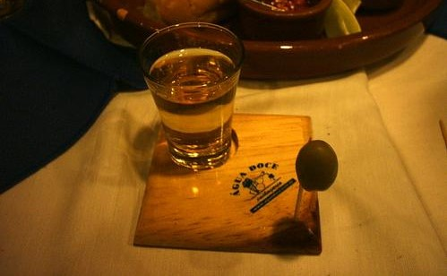
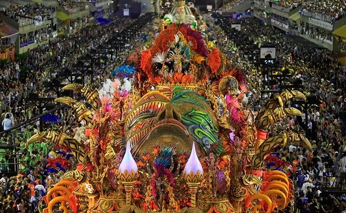
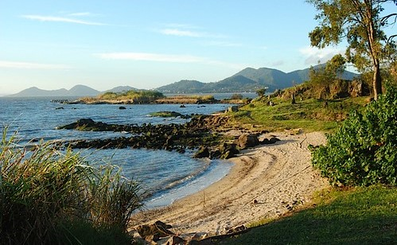

A Rich and Vibrant Culture
Brazil is a melting pot of cultures, where indigenous traditions blend seamlessly with African and European influences. This diversity is reflected in its music, dance, and festivals, making Brazil a unique and captivating destination for visitors.
Food and Drinks
Be sure to try out everything Brazil's cuisine has to offer. From the savory feijoada, a hearty black bean stew, to pão de queijo, the famous cheese bread, food lovers will find plenty to enjoy. Don’t miss out on trying caipirinha, Brazil’s national cocktail, made with cachaça, lime, and sugar.
Festivals and Celebrations
Carnival is Brazil’s most famous celebration, a vibrant and colorful festival filled with samba music, extravagant costumes, and street parades. It’s an unforgettable experience that draws visitors from all over the world.
Natural Beauty
Brazil is home to breathtaking landscapes, from the Amazon rainforest to the stunning beaches of Rio de Janeiro. Explore the Pantanal, the world’s largest tropical wetland, or take a boat ride to experience the majestic Iguaçu Falls.
